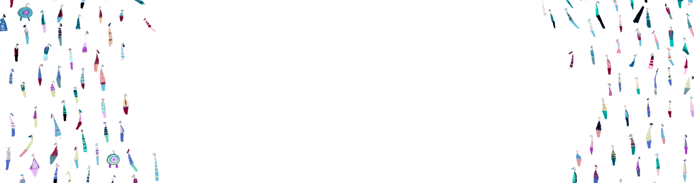

texto imagen 1
texto imagen 2
texto imagen 3

Renálida fue establecida con el propósito de transformar la atención renal, procurando que los avances en nefrología sean accesibles para todos. Fundada en Mar del Plata, Argentina, en 2021, por la Dra. Paula Marioli, Renálida es el fruto de una visión pionera que busca no solo tratar la enfermedad renal, sino prevenirla, aprovechando un modelo de atención integral que combina la excelencia clínica con la investigación, educación y una efectiva gestión del riesgo.
Nuestra misión es liderar en la transformación de la atención renal a través de un enfoque integrado y transdisciplinario, proporcionando servicios preventivos, diagnósticos y terapéuticos de la más alta calidad. Un componente clave de nuestro compromiso es la gestión del riesgo, enfocándonos en la detección temprana y el tratamiento personalizado de la enfermedad renal para mitigar su progresión y mejorar la calidad de vida de nuestros pacientes. Estamos comprometidos a asegurar un acceso equitativo a estos servicios para todos los pacientes, especialmente los más vulnerables.
Aspiramos a ser reconocidos como un referente global en innovación de la salud renal, estableciendo un nuevo estándar de atención que sea inclusivo, sostenible, basado en evidencia y proactivo en la gestión del riesgo. Nuestra visión se centra en crear un ecosistema renal eficiente que integre la atención clínica, la investigación avanzada, la gestión de recursos y un enfoque estratégico hacia el riesgo, asegurando que los avances en nefrología beneficien a todos, sin excepción.
texto imagen 1
texto imagen 2
texto imagen 3
Renálida recibe premio a la innovación en salud renal
Renálida lanza programa de prevención de enfermedad renal
Renálida anuncia alianza con ISN para mejorar atención renal
Renálida presenta resultados de estudio sobre calidad de vida en pacientes renales
Renálida lanza campaña de concientización sobre enfermedad renal

“Estoy muy agradecido con Renálida por la atención que recibí. Gracias a su equipo de profesionales, pude mejorar mi calidad de vida y controlar mi enfermedad renal de manera efectiva.”

“Renálida me brindó una atención integral y personalizada que me permitió entender mejor mi enfermedad renal y aprender a manejarla de manera efectiva. Estoy muy agradecida por su dedicación y compromiso.”

“Gracias a Renálida, pude acceder a un tratamiento de calidad y mejorar mi calidad de vida. Su enfoque integral y su equipo de profesionales altamente capacitados hicieron la diferencia en mi recuperación.”